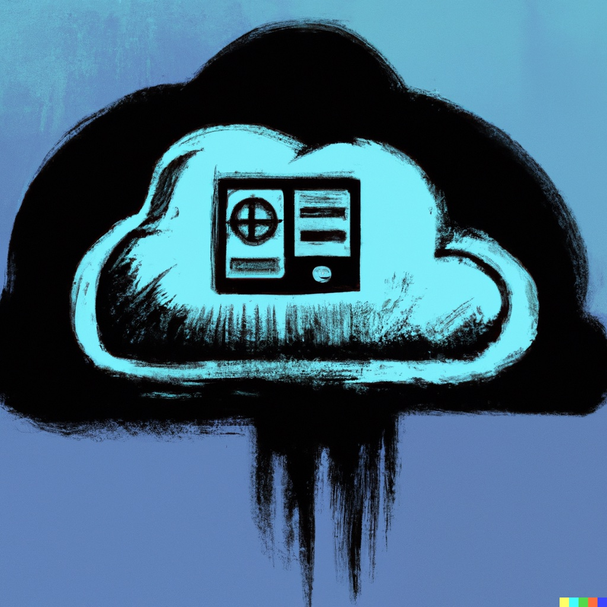

Going digitally nomad is a dream for everyone, right? For the data scientist or ML operative, being able to get the work done no matter the location increase the resilience of any project. In addition, being able to leave that beefy workstation behind without sacrificing compute performance or tool availability is a game changer. Suddenly you’re tuning huge ensamble models using your phone in the back of a taxi, or doing EDA of a massive dataset using an ipad on an Italian roof terrace. Aside from personal convenience, I assume its better in terms of climate footprint to share resources with others in an ad hoc fashion instead of having everyone sitting around with tons of compute redundancies.
Sounds great - and in this post I’ll share some of my own experience with pursuing digital nomadness as a data scientist using cloud services - specifically by hosting an instance of RStudio Server on Amazon Web Services (AWS). Posit of course provides their own RStudio cloud, here I am just showing my current imperfect way of doing it - simply because I like to tinker around. This post assume you’re on a Linux system.
Outline
- Get a virtual machine in the cloud using AWS EC2
- Set it up for Rstudio Server
- Profit???
EC2 - elastic compute cloud
AWS is kind enough to get beginners up to speed with their services by providing good tutorials and documentation, while also providing some free compute power. One of the great things about computing in the cloud is the flexibility. To get stuff up and running, you’re usually fine with the bare minimum of performance, then you can easily scale up the resources to make the virtual machine more powerful when needed.
First forge the key…
Lets get this out of the way. In order to securely connect to your cloud resource, you need to generate SSH keypairs for authentication between the client (your computer) and the virtual machine instance (the aws server). There are of course several ways to do this, including being more or less secure about it, but the easiest way is to generate the key pair on your local machine ussing ssh-keygen:
# Generate SSH keypair, accepting the defaults with enter
ssh-keygen Copy the public key:
# Show your public key
cat .ssh/<nameofkey>.pubGo to EC2 > Network and Security > Key Pairs > Import Key Pair, paste and save the public key.
…Then build the fortress
Now, find a suitable instance type for the VM. Find the “t3.micro and set it up for Ubuntu Server (I went for version 20). This is a weak virtual machine with only 1 GB of RAM and 2 vCPU’s. But its free tier, meaning that you can get a lot of use out of it for a limited time and when you need to actually start paying for it it costs about 1 cent per hour to use it. Compared to something like a raspberry pi, you can run the cloud machine for thousands of hours before hitting the pricetag of the pi. Make sure that you set the keypair you just created as a login keypair!
Elastic IP to the elastic compute cloud
Every time your instance is started or restarted, it gets assigned a new public IP address. This is a bit of a hurdle for your SSH’ing, as you need to log in to the AWS console, find the instance’s new Public IP, and update your connection settings for your SSH client in order to connect to your virtual machine. Luckily, there are a few different ways of dealing with this. You can get your own domain name from AWS (subscription based), hook up a cronjob with a no-ip solution on the VM, use AWS Route53, or some other clever thing. For a use case like this, I however prefer to settle for attaching the instance to an “elastic IP”. That is AWS’s own little DNS magic to route traffic between it’s static and dynamic IP’s. Its free if the instance is running, and cost a little bit when it’s not. See what they did there? Do you want to pay for the instance or for the elastic ip?
Anyways, setup is super simple. just go to Network and Security > Elastic IP in your EC2 console, click Allocate Elastic IP address and attach it to your new instance. The allocated IPv4 adress will be associated to the instance, and you won’t have to worry about your SSH settings ever again.
SSH into the machine, install software
Any SSH client works for connecting to your EC2 VM, but I usually go with Termius since it has apps for the Apple ecosystem that sync connection settings across devices.
SSH into your new virtual machine way up in Bezocloud using your new blingy auth keys and golden IP, then install R, RStudio server, and dependencies using these instructions (provided you’re on Ubuntu 20): R & RStudio Server
Now we should be able to use any browser to connect to the RStudio web GUI on <your.elastic.ip>:8787.
Next issue, since we’ve used SSH keypair authentication for the EC2 instance, we have no password to log in with. Instead of assigning our default user “ubuntu” with a password using passwd, we can make a separate user for our R business:
Keep in mind that anyone may stumble across your RStudio web login form, so choose a strong user and password combination! Also take a second to ponder the user permissions so any evil redteamers can’t cause to much trouble on your cloud system.
# add user "rstudio-user" and create a home dir for it
sudo useradd -m rstudio-user
# set a password rstudio-user
sudo passwd rstudio-user
# add a group in case you want to add more users later - just append to this group
sudo groupadd rstudio-group
# Put the user in the group
sudo usermod -aG rstudio-group rstudio-userBasic security:
# Disable shell access for rstudio-user
sudo usermod -s /bin/false rstudio-useralso, open the RStudio config file with sudo nano /etc/rstudio/rserver.conf and add these lines:
# Only authorize users in the rstudio-group to access rstudio
auth-required-user-group=rstudio-group
# Limit the number of concurrent sessions
max-sessions-per-user=2And restart the server
sudo systemctl restart rstudio-serverNow you should be able to log in to the RStudio web GUI using the new credentials.
There we have it! Our own, fresh RStudio environment in the cloud, accessible from any device with an internet connection. Remember that by default, it runs on the super non-secure HTTP protocol, so anyone on the same network could potentially listen in on all your traffic. I’ll go through how to fix that in a future post, as well as pairing the the compute environment with an S3 bucket for storage of data!